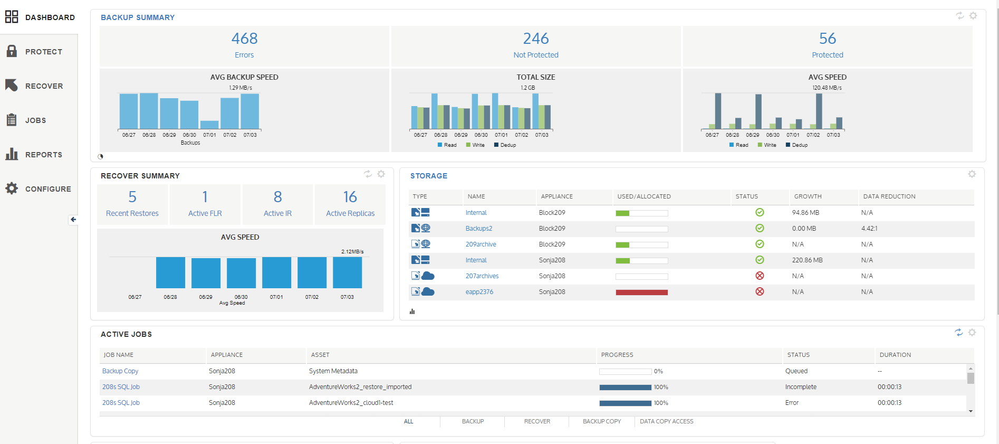

Unitrends

As part of the UI/UX team, I got to help build the dashboard for Backup and Disaster Recovery appliances. Each widget was a card that could flip to show a different view of the same information.
For example, the card labeled BACKUP SUMMARY could be flipped to display a pie graph of Protected Assets, Unprotected Assets, and Errors.
The card labeled STORAGE could be flipped to display a bar graph instead of the table you see.
The ability to flip the card is denoted by the icon in the bottom left of the card. Additionally, clicking on the blue heading on each card took you to the relevant reporting screen. Clicking on the gear in the upper right displayed a settings menu, where the user could check or uncheck which widgets were displayed on the page.